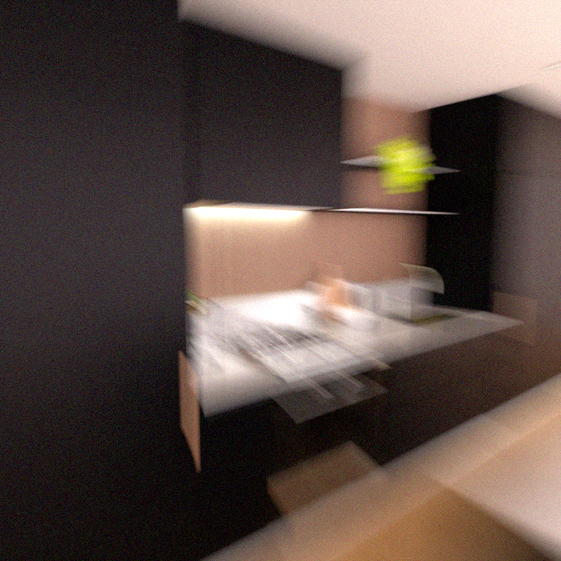
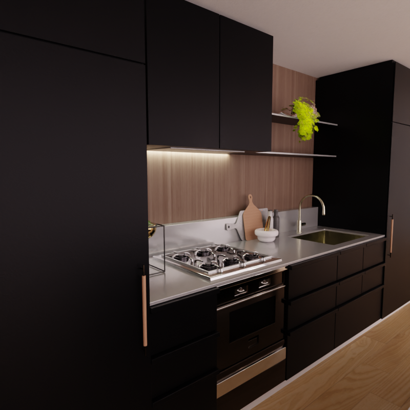

Introduction
Single-photon avalanche diode (SPAD) cameras capture high-speed bursts of binary frames, where each pixel records only whether a photon arrived during a given exposure. A single frame carries almost no usable signal; a clean image only emerges from aligning and merging an entire burst, a process known as quanta burst photography. We address single-photon image reconstruction under motion: specifically, whether history-rejection heuristics from real-time temporal anti-aliasing (TAA) — neighborhood clamping and motion-adaptive blending — improve classical align-and-merge reconstruction, especially under fast motion and disocclusion.
The standard SPAD reconstruction pipeline (estimate motion, align, merge) is structurally identical to temporal anti-aliasing in real-time rendering, yet this connection does not appear to have been explored in prior work. Bringing history-rejection techniques developed for real-time graphics into photon-level reconstruction offers a genuinely cross-domain angle with a clear, testable hypothesis. SPAD arrays are also an emerging sensor technology — megapixel-scale arrays now exist — which makes the underlying reconstruction problem increasingly practical to study.
The project builds directly on Prof. Gupta's own quanta burst photography research and the Single Photon Challenge benchmark his lab co-organized, giving the team a public dataset with ground truth rather than requiring custom data collection.
Approach
Our approach proceeds in four stages:
- Implement a baseline: naive frame averaging, followed by hierarchical block alignment and merging (a simplified quanta burst photography pipeline).
- Implement a TAA-augmented pipeline using the same alignment and merge backbone, adding neighborhood-clamping history rejection, motion-adaptive blend weights, and a per-pixel confidence map.
- Evaluate both pipelines on held-out Single Photon Challenge training scenes and on synthetic motion sweeps generated with the visionsim simulator.
- Analyze where and why each method breaks down under fast motion and disocclusion.
Figure 1 illustrates the per-frame mechanism of the TAA-augmented pipeline and the point at which the naive-averaging baseline diverges from it. This approach draws on course material including image alignment and transformations, RANSAC, optical flow, tracking, and the quanta computational imaging lecture.
Data
The Single Photon Challenge dataset provides 50 simulated training scenes and 5 test scenes (ground truth withheld), each burst (a “photon cube”) consisting of 1,024 binary frames. The full set is approximately 425 GB; we will work with a 5–10 chunk subset (roughly 8.5 GB per chunk), supplemented with our own synthetic motion sweeps generated via the MIT-licensed visionsim simulator.
Evaluation Plan
We will report PSNR and SSIM on held-out training scenes, and conduct a failure analysis against motion speed using visionsim sweeps to characterize when temporal reconstruction breaks down. The contribution is framed as an interpretable classical method with a rigorous failure analysis, rather than a state-of-the-art claim against neural approaches.
Timeline
| Week | Dates | Milestone |
|---|---|---|
| 1–2 | Sep 29 – Oct 12 | Data pipeline (subset download, visionsim setup) and baseline (naive averaging + block alignment) working |
| 3–4 | Oct 13 – Oct 26 | TAA-augmented pipeline implemented (clamping, adaptive blending, confidence map) |
| 5 | Oct 27 – Oct 29 | Mid-term report: baseline vs. TAA results so far, difficulties encountered |
| 6–8 | Oct 30 – Nov 19 | Motion-speed sweeps via visionsim, failure analysis, iteration |
| 9 | Nov 20 – Nov 30 | Final evaluation, ablations (which TAA tricks help most), results polish |
| 10 | Dec 1 – Dec 10 | Presentation and final webpage |
Scope and Feasibility
This project topic was discussed with Prof. Gupta, who confirmed it is a reasonable and worthwhile direction to propose. As is expected at this stage, the specific scope may be refined as implementation progresses and initial results clarify what is achievable within the semester. Prof. Gupta also offered to connect the team with members of his lab for data access or implementation guidance if needed.
Project Updates
Mid-Term Report (Oct 29, 2026)
Progress, current results, and difficulties encountered will be added following the mid-term milestone.
Results




Discussion
Analysis of where each method succeeds and fails, and what the failure analysis reveals about temporal reconstruction under fast motion, will be added as results come in.
Final Presentation
A link to the presentation slides/recording will be added here (Dec 1–10).
Code
Source code: GitHub repository
Downloadable scripts and executables are available in the repository's src/ directory.